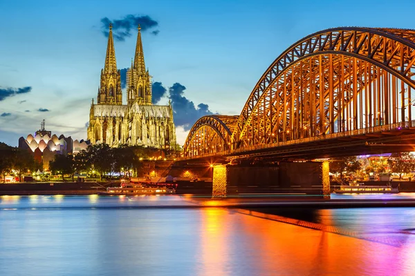
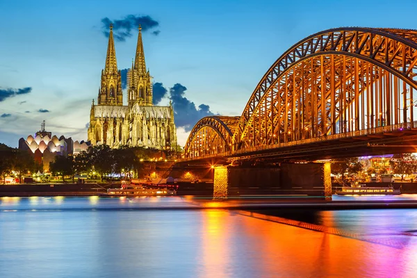

Німеччина – це країна, яка захоплює різноманітністю своїх ландшафтів, багатою історією, сучасною культурою та, звичайно ж, смачною кухнею. Обираючи Німеччину для подорожі, ви отримаєте незабутні враження та відкриєте для себе безліч цікавих місць.
Це один із найпопулярніших замків у Німеччині. Його ви побачите на листівках у сувенірних лавках і картинках про Німеччину, тому поїздка в Баварські Альпи варта того, щоби побачити замок на власні очі.

Це справжній символ Німеччини, тому Бранденбурзькі ворота варто побачити вживу в першу чергу будучи в Берліні.
Посеред європейської столиці на невеликому острівці Шпрееінзель знаходяться найяскравіший і значимий об’єкт культурної спадщини країни — музейний острів. Тут цілих 5 музеїв, які створювалися в різний час.
Німеччина – це країна з багатою історією та різноманітними культурними традиціями. Від середньовічних замків до сучасних міст, від пивних фестивалів до класичної музики – Німеччина пропонує безліч цікавого для кожного мандрівника. Кожен регіон Німеччини має свої унікальні традиції, діалекти та кухню.


 
